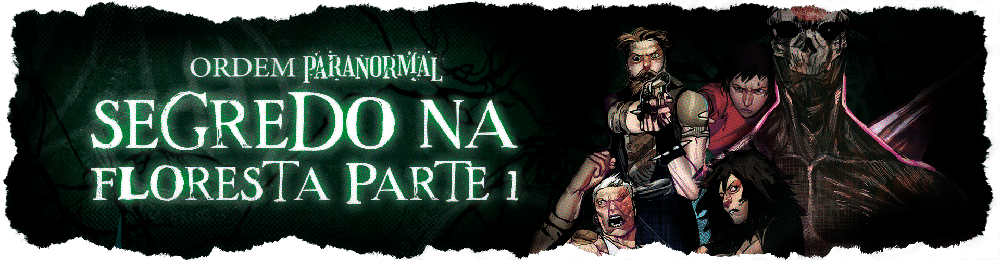

Primeiras temporadas do ordem
Por: Julia Pozzo
As primeiras temporadas do ordem são cheias de curiosidade, principalmente por que o cellbit ainda não tinha feito o sistema de ordem pararnomal, então as três primeiras temporadas foram feitas com o sistema:"o chamado de Cthulhu". Muitas pessoas não são muito fãs da primeira temporada, chamada iniciação, por causa do cellbit ainda não ter muita experiência mestrando, mas mesmo assim essa temporada é muito importante para a história do ordem.
Como surgiu o sistema do ordem?
Por: Julia pozzo
O sistema de ordem foi criado na terceira temporada, em 2022 que foi calamidade, uma das temporadas favoritas dos fãs. Antigamente na primeira temporada o ordem era para ser apenas uma campanha com um nome obvio, uma ordem que combatia o paranormal, mas acabou que o público foi tanto que o cellbit decidiu fazer disso um dos projetos da vida dele, com quase 400 horas de rpg em que tem mais de milhões de fãs e faz muita gente feliz.
Teorias sobre como será a proxima, e talvez última, temporada
por: Julia Pozzo
Na última temporada do ordem, Hexatombe, os players acabaram trazendo o apocalipse o que fez o mundo ficar vermelho como sangue, deixando muitas duvidas no ar, provavelmente os players que irão jogar nessa proxima temporada serão apenas os personagens que estão vivos, pois existe a teoria de que essa será a última temporada do ordem, e essa será uma temporada em que muitos de nós fãs sofrerão, por que irão ocorrer diveras mortes dos nossos personagens favoritos e se nós já sofremos com a morte do Joui imagina a do Arthur, mas essas são algumas das teorias mais realistas de apocalipse.